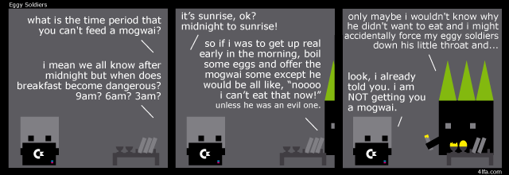

https://twitter.com/joe_dante/status/1656702262675398657 @joe_dante Is it sunrise? 
https://twitter.com/derElbi/status/1654779208172797952 @derElbi Well the main advantage I see of taxidermy is they can still shake hands and wave.
That's 99% of the job.
Sure you get a little bit less general movement but they are already largely moved around by staff so no real change there.
Alternative idea.
You know how many people wanted to see the queen in a box?
Well, just imagine the amount of tourism that could be achieved with just a little bit of taxidermy.
We would like to remind all players that although the company policy is "If you die in the game you die in real life" our lawyers have informed us it would be illegal to enforce.
Hence, "If you die in the game you die in real life" policy, is operated purely as an honour system. https://twitter.com/pcgamer/status/1650489380509822978
What you think of as treasure chests are just Mimics that starved to death waiting for you. https://twitter.com/pcgamer/status/1649641115878924290
but what if you bend it in the other direction you say?
Things go a bit strange, obv.
rolling rolling rolling
That is a fake horizon that is.
Turns out you can do a "animal crossing style camera" where things pop up over the horizon as you get closer with a very simple final camera hack like this in a vertex shader.
gl_Position.y-=pow(length(gl_Position.xz)*0.02,2.0);
Assuming your camera has no roll, y is vertical.
Is this an April Fool?
Testing stuff and I kinda like having objects freeze as they leave an active simulation zone waiting for you to cross the border and see what happens next.
It feels gamy (sic).
Nearly all the historical work worth doing at the present moment in the English language is the work of shovelling off heaps of rubbish inherited from the immediate past. https://twitter.com/gutenberg_new/status/1636522818832846848
Here's A (fun) RSS reader link.
https://xriss.github.io/arss/?idb=delete&opml=https://itch.io/devlogs.xml#READ
All the itchy game news fit to print.
I made A RSS for myself.

Before RSS I used to read Live Journal, before that it was CIX and before that it was FidoNet with maybe a little bit of Usenet thrown in around the edges. I have been reading the Internets for a very long time.
It has now been ten years since google announced they where shutting down google reader signalling the end of RSS as a thing you could rely on and I never really found a replacement apart from being annoyed at twitter.
I mean obviously RSS didn't just stop working overnight but it no longer felt like it stood a chance of getting better. From here on in it was only going to get worse, no one big was pushing it and it would suffer a slow painful death.
Which is exactly what happened, it is pretty easy to find big sites now that do not provide any RSS feeds of their content and I forget when I last saw a site proudly displaying an RSS icon.
Now google reader wasn't the best but it was less terrible than anything else. Many readers are more book mark managers or email clients that have had some RSS tacked on. I'm not interested in any of these things, I want that endless doom scroll that I have been used to for decades.
So, I figure I'm gonna have to build it myself.
I present for you, my A RSS reader and invite you to join me. Go back into the water, live there, die there.
ARSS Provides a column of endless scrolling and a quick site preview in an iframe right next to it, you never have to click anything just doomscroll and doomread like baby jebus intended.
You got problems, open up an issue on github, you don't got problems then jump right in at https://xriss.github.io/arss/ and import an OPML
Also because we are just a web page we can hot link direct to RSS feeds for a quick view like https://xriss.github.io/arss/?idb=delete&opml=https://itch.io/devlogs.xml#READ or like https://xriss.github.io/arss/?idb=delete&opml=http://feeds.bbci.co.uk/news/rss.xml#READ
This is a client side application, running dynamical in a web page with no real server backend.
Except, well security theatre is a bitch and we are currently using a CORS bouncer to get around web browser issues.
Note that these are not technical issues, everything we are doing is pretty simple, these are self induced security restrictions implemented by browsers to stop "bad guys" from doing "bad things" unfortunately "bad guy" just means "not google" or "not facebook" who get to do all the evil they want.
Think cookie popups, well meaning but ultimately bullshit and with no way to opt out of the "solution".
I think we can hack around this some more to remove the CORS bouncer and use a browser extension instead but this will obviously be even less user friendly than the current solution.
Until then I am happy with the current state, it uses client side databases for
caching and even lets you keep your feeds in a gist as a simple persistent
login system. Yeah its a bit technical to do that but if you want to read A RSS
Feed then you are already in the top tech 1%ers :)
An angry bee smells like banana.
A sexy bee smells like lemon grass.
The year is 2525 and AI generated images still have an unacceptable number of fingers.
Who knew that the last 1% of the solution was going to be so hard?
https://twitter.com/ZellChristensen/status/1635034481244667904 @ZellChristensen Thatsa whata I makea. :)
https://twitter.com/ZellChristensen/status/1634966951079596032 @ZellChristensen That one, treats feeds like emails. Not quite what I want, I want more a stream of shit, which can mostly be ignored.
Also I want a webpage, which is where most of the work has been. I will probably end up with a browser extension solution as I'm not happy with the CORS bouncer.
Boy, have I got A RSS for you!
So I got a bit confused and decided to return to RSS by building my own in browser reader thingy in time for the ten year deathday of google reader.
Go back into the water, live there, die there.